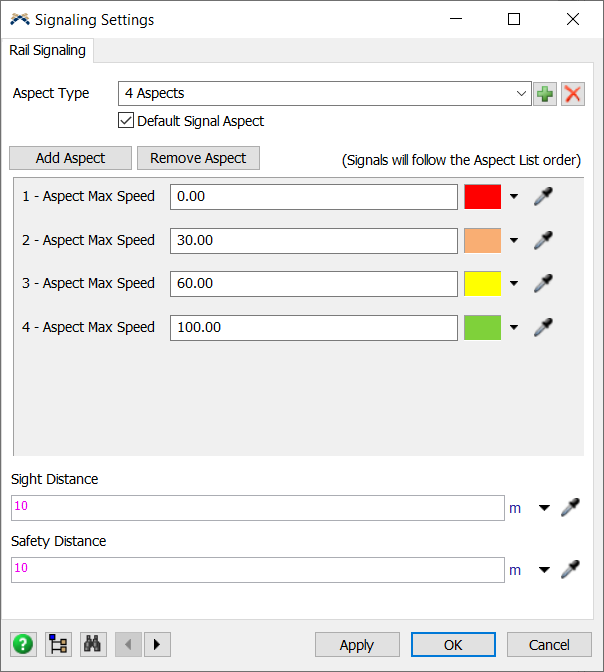
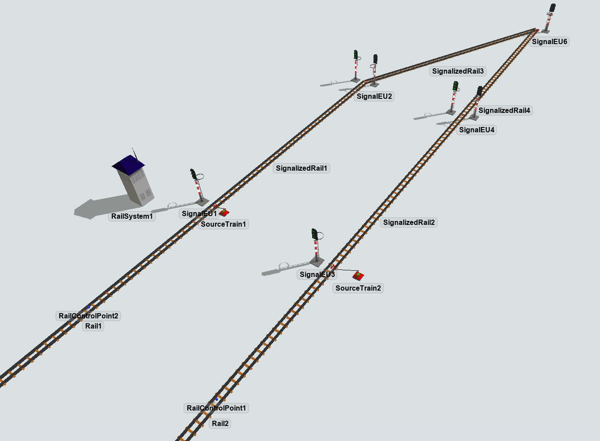
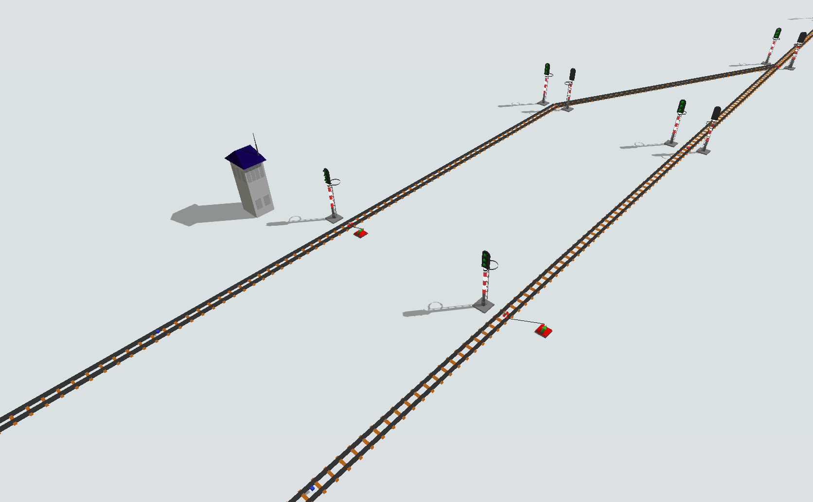
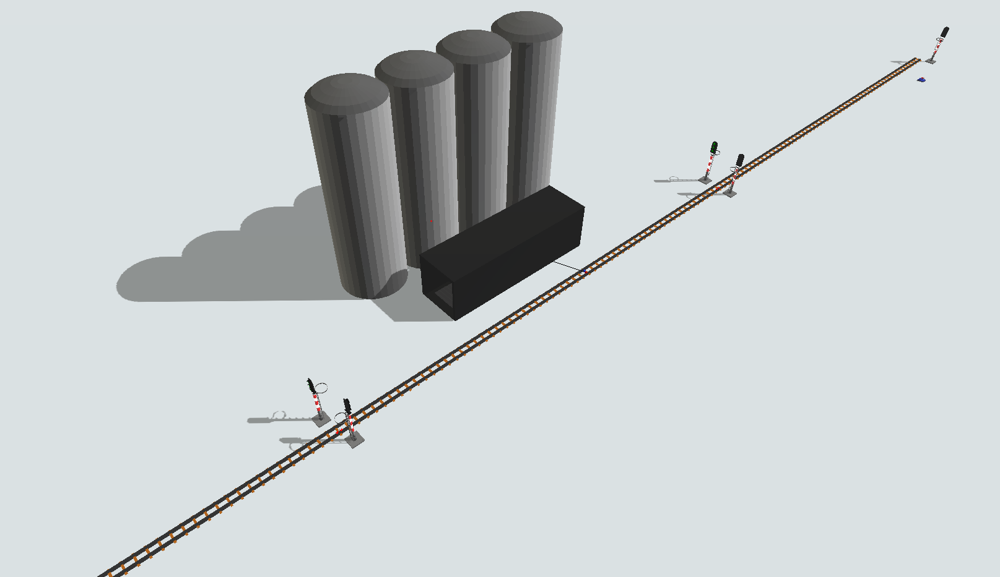
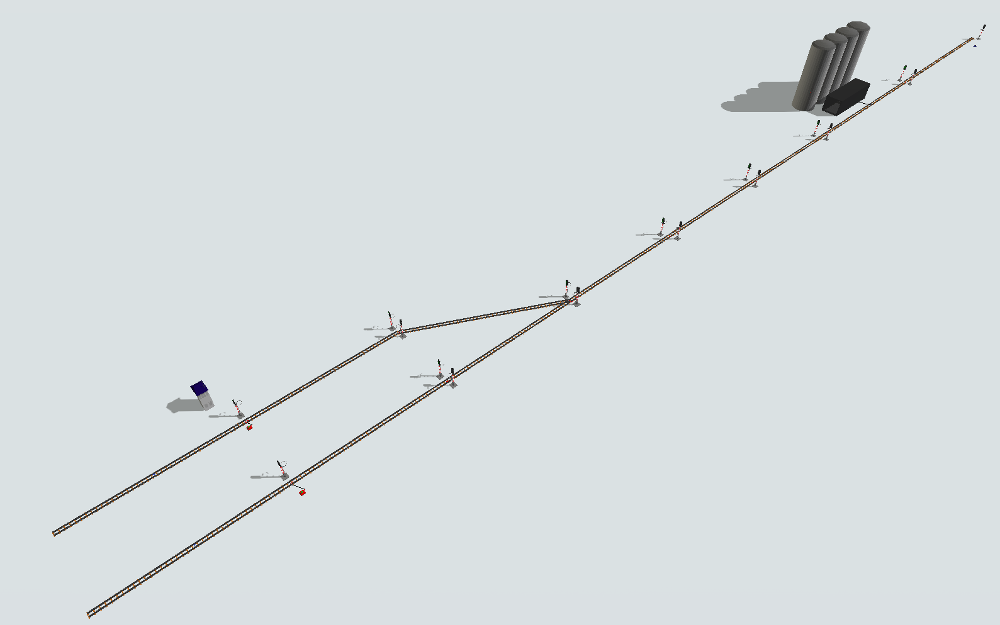
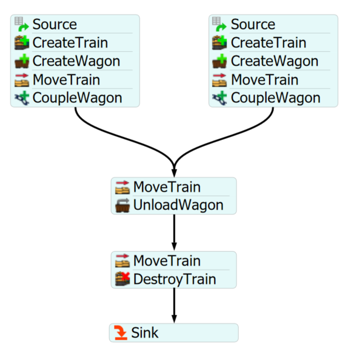

Exercise Information
Two trains are arriving at a station to unload the cargo. The difference in arrival between
the two is 10s. The train is a locomotive with one wagon carrying 1 ton of ore. The trains
are coming from different places, but they will pass over the same stretch of track, so there
will be Signalized Rails for the section with the critical section for safety purposes.
The Signal Aspects represents 100%, 60%, 30% and 0% of the total speed, the signal sighting distance
is 10 meters and the same for the safety distance. After the station receives all the cargo, the train
follows the track to the end, is destroyed and sent to a sink.
Step 1 Signal Settings
The most complete and accurate way to use the rail signaling system is to create an aspect type,
add the number of aspects, define the Signaling Aspects, the default aspect that the rails will
take on when they are created, and define sight distance and safety.
To access the signal settings, follow the steps:
- Drag one Signalized Rail to the model.
- Access the RailSystem properties and click on the "Signal Settings" button.
- Click on the + symbol to add a new aspect type.
- Rename the custom aspect type to "4 Aspects".
- Check the checkbox "Default Signal Aspect", so all the next Signalized Rails created on the model will follow this Signal Aspect.
- Click once on Add Aspects so you have 4 aspects.
- Change the color of each aspect to red, orange, yellow and green, with the highest restriction being the first on the list and the lowest, the last.
- Change the "Aspect Max Speed (%)" of the red to 0, orange to 30, yellow to 60 and green to 100
- Change both "Sight Distance" and "Safety Distance" to 10m.
- Press OK to apply the signal settings change and close the GUI.
- Change the previously created Signalized Rail aspect to "4 Aspects" at the SignalizedRail properties.

Step 2 Creating objects
In order to achieve the solution for the problem, you should create the
following objects:
- Create one SourceTrain.
- Connect SourceTrain to the SignalizedRail1 (using the A key).
- Create a normal Rail and connect to the beginning of SignalizedRail1 via proximity.
- Create a RailControlPoint on the middle of Rail1.
- Create this same track (Rail, SignalizedRail, SourceTrain, RailControlPoint) about 20m apart from the first structure.
- Create another SignalizedRail and connect it to the SignalizedRail1 via proximity.
- Create another SignalizedRail and connect it to the SignalizedRail2 via proximity.
- Rotate SignalizedRail3 to create a connection between SignalizedRail 1 and SignalizedRail4 creating an intersection.

- Create and connect four SignalizedRails from the intersection.
- Resize the last created SignalizedRail to 100m.
- Create a RailControlPoint on the middle of this last SignalizedRail.
-
Create a Silo station near the SignalizedRail and connect the
central port to the RailControlPoint (using the S key).
- Set the "Max Weight" property of the Silo to 5000.
- Create and connect one more SignalizedRail to the end of the track.
- Place a sink near the last SignalizedRail, no connections needed.
Your model should be looking like this:



Step 3 Processflow Configuration
In order to achieve the solution for the problem, you should create the
following processflow tasks:
- Create an Schedule Source.
- Create a "CreateTrain" activity.
- Create a "CreateWagon" activity.
- Create a "MoveTrain" activity.
- Create a "CoupleWagon" activity.
- Duplicate this entire activity block.
- Create a new activity block starting with a "MoveTrain" activity.
- Create a "UnloadWagon" activity.
- Create a "MoveTrain" activity.
- Create a "DestroyTrain" activity.
- Create a Sink.
Your processflow should be looking like this:

To configure your processflow tasks follow the steps:
- On the left "Schedule Source" set the arrival time to 0 and the quantity to 1.
- On the right "Schedule Source" set the arrival time to 10 and the quantity to 1.
-
On the left "CreateTrain", set the "Source Train" reference to SourceTrain1 and on right "CreateTrain"
set the reference to SourceTrain2. You can change the color of the locomotives if you wish.
-
On the left "CreateWagon" activity, set the "Control Point" reference to the RailControlPoint on Rail1 and on
the right "CreateWagon" set the "Control Point" reference to the RailControlPoint on Rail2.
- On both "CreateWagon" activities, set the "MaxWeight" and "CurrentWeight" properties to 1000.
-
On both "MoveTrain" activity, set the "Final Destiny" reference to the label "token.wagon".
-
On "CoupleWagon" activities you can left the default settings.
-
On "MoveTrain" activity, set the "Final Destiny" reference to the Silo Station.
-
On "UnloadWagon" activity, set the "ControlPoint" reference to the Station RailControlPoint and the
"Unload Time" to 30 seconds.
-
On the last "MoveTrain" activity, set the "Final Destiny" reference to the last rail of the track.
-
On "DestroyTrain" activity, set the "Sink" reference to the Sink.
With this configuration your model is ready.